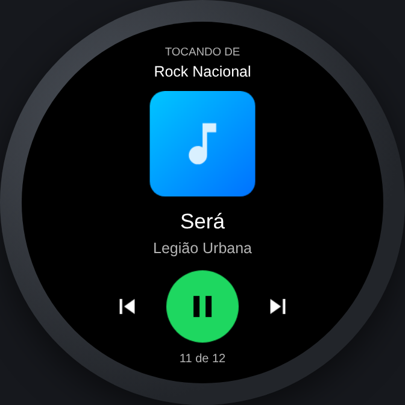
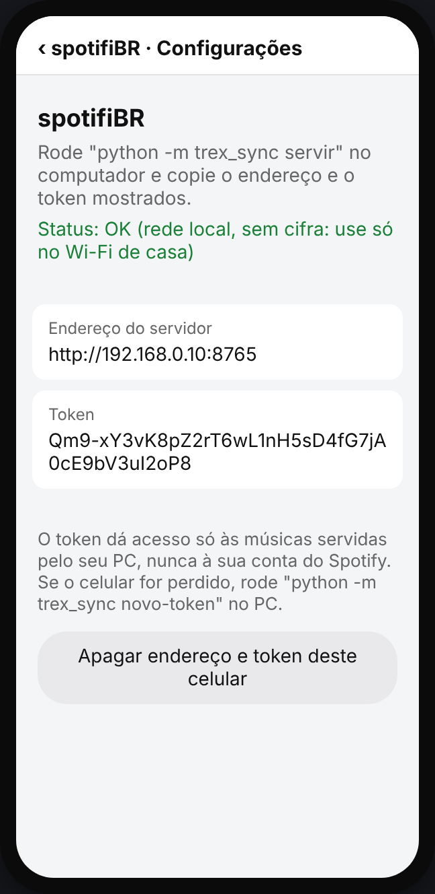
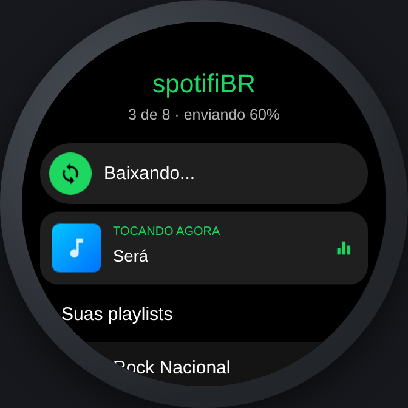
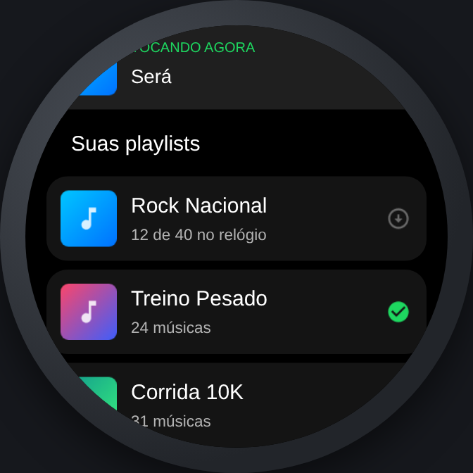
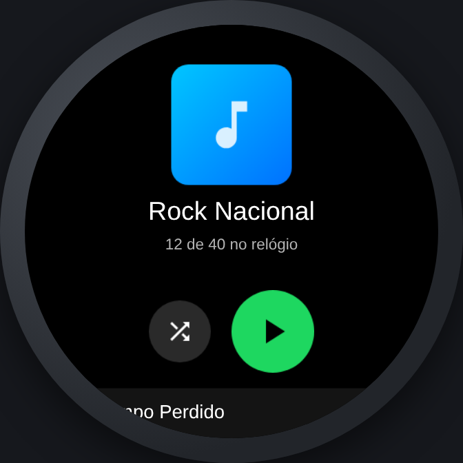

Suas playlists do Spotify, offline no Amazfit T-Rex 3.
Como funciona · Como instalar · Como usar

O Spotify diz quais músicas. O áudio vem dos seus arquivos.
O áudio do Spotify é criptografado e só toca no app dele. Quebrar isso viola a lei de direitos autorais e os termos do Spotify.
CDs, downloads antigos, sua coleção
Compra em MP3 ou FLAC, sem proteção
Compras avulsas (não a assinatura Apple Music)
Jamendo, Free Music Archive
Coloque o arquivo na pasta da sua biblioteca. No próximo sync ele é encontrado automaticamente pelo artista e título.
Python 3.10+, ffmpeg e Node 18+
(Windows, Mac ou Linux)
Redirect URI:http://127.0.0.1:8888/callback
npm i -g @zeppos/zeus-cli → zeus login → zeus previewappId em zepp-app/app.json pelo da sua conta em console.zepp.comzeus preview
saida/_FALTANDO.txtpython -m trex_sync servir --sync


python -m trex_sync novo-token invalida o acesso na horaGuia completo: COMO_USAR.md · Segurança: SECURITY.md
Projeto pessoal · sem afiliação com Spotify ou Zepp/Amazfit